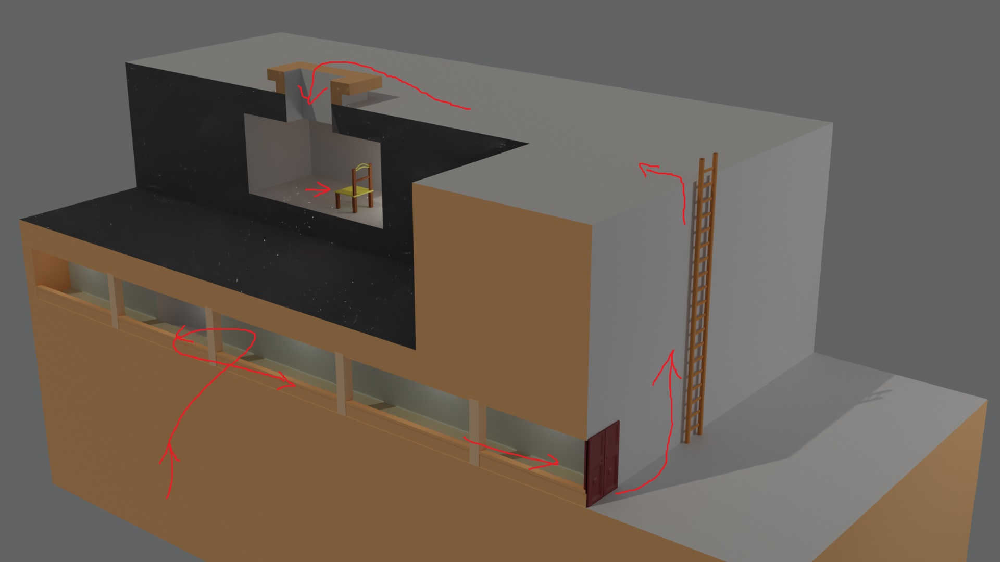

Riddle 66 Psychology Test
Riddolver , 恭喜恭喜. 你花了多长时间呢?
在这栋楼的一楼, 藏着下一个谜题.
楼梯, 连接着楼层与楼层, 以其隐蔽和便利为人重用. 然而, 有些楼梯因过度隐秘而失去了原本的功能, 竟成为世俗的迫害品. 楼梯不会凭空消失, 但消火栓之类的附属品却失去了一切的意义. 不, 还有一个 ——那便是我们赋予其的最后的意义.
此楼的楼顶, 藏着又一个谜题.
若说这楼顶竟有教室, 你会相信吗? 毫无意义的存在, 看似毫无意义 ——但真是如此吗? 是人类赋予了他物以意义, 因而剥夺了其之意义; 还是因欲赋予其意义, 而创造其之存在? 教室位于南之尽头, 仅有一窗口, 却又以门的价值, 连结内外. 仅有一板凳, 却能凭线索的身份, 贯穿谜题. 事实与假象常驻, 壮举与危机并存. 若不怀失尽一切的决心, 亦不获守护一物的力量.
如果没有意义,
就不会存在.
Tips
-
-
eht(51) dhirt(155) airst(188) is(47) ddehin(163) bdehin(166) a(1) ehitw(171) abdor(127)
-
70182 778 58242 265251616 -28425503967 7296 -157737 1465120
-
-
-
ehnorstu(500) fo(27) eht(51) foor(117)
-
-9029701 778 -59213 134 778 -1762703
-
点击 "Check" 以解锁下一题
下一题
下一个迷题藏废弃教学楼一楼的楼梯附近的消防箱里.
下一题
下一个迷题藏在废弃教学楼的楼顶南侧洞中的椅子上.
这一题的心理测试只是一个幌子, 完成了也没有用. 我提供的笔的内部藏着真正的第 66 题, 它被打印在纸条上, 卷起来塞进了笔的内部. 也正应和这一题的代号, 你不是要做 True or False 的心理测试, 而是要发现真正的迷题和虚假的迷题是什么.
事实上, 这一题的网络版只算是完成了一半, 因为你还要解读上面的文本, 并在学校中找到隐藏地点.
第一个地点挺好找的, 因为废弃教学楼一楼的楼梯一共不超过 5 个, 你大可以一个一个消防柜的找, 总会找到的.
第二个地点就有点难度了, 因为你首先要找到去废弃教学楼的楼顶的路, 然后还要从楼顶爬一个又高又长几乎没有保护措施的梯子, 才能到达楼顶南侧. 到了南侧还没结束, 因为你还要深入一个大约 2 深米的洞里, 才能找到椅子. 具体流程可以参考下面的简图:
